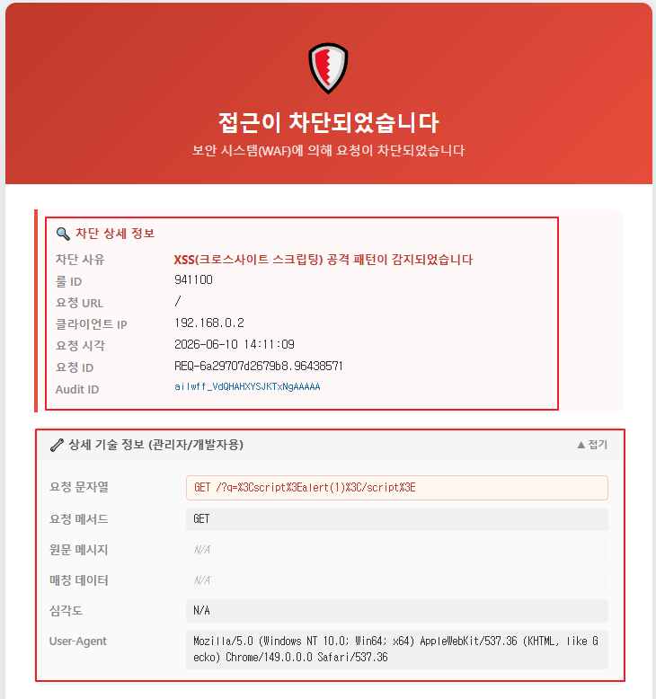
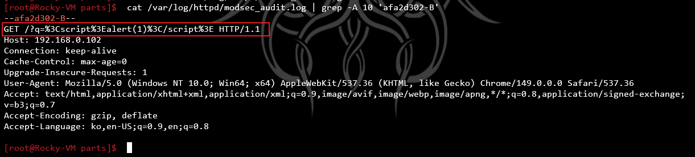
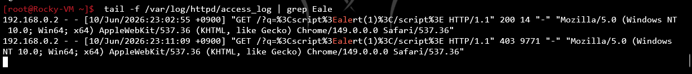

시스템 인프라 운영
ModSecurity WAF 차단 페이지
Apache + ModSecurity + OWASP CRS로 WAF를 구성하고, 차단 시 사용자에게 사유를 보여주며 해제 요청까지 받을 수 있는 커스텀 차단 페이지를 구축했습니다.
개요
ModSecurity가 차단하면 기본 403 페이지만 표시되어 사유를 알 수 없고, 정상 사용자가 차단된 경우 해제 요청 방법이 없었습니다.
ErrorDocument 403을 /waf/block.php로 연결하고, 환경변수와 audit 로그를 파싱해 차단 사유·룰 ID·심각도를 표시하는 페이지를 만들었습니다. 해제 요청 폼도 추가했습니다.
차단 시 사유와 룰 ID를 즉시 확인하고, 사용자가 직접 해제 요청을 남길 수 있게 되었습니다. 관리자는 화면의 Audit ID로 audit 로그에서 해당 요청을 바로 찾을 수 있습니다.
1. 구성 환경 및 요청 흐름
| OS | Rocky Linux 9.8 |
|---|---|
| Web Server | Apache httpd + PHP 8.0 (php-fpm) |
| WAF 엔진 | ModSecurity 2.9.6 |
| 룰셋 | OWASP CRS 3.3.5 (Anomaly Scoring 방식) |
클라이언트 요청
│
▼
ModSecurity 룰 검사 ── 탐지 룰(941100 등)이 점수 누적 + setenv 로 차단 사유 기록
│ 점수가 기준을 넘으면 949110 이 403 차단
▼
Apache ErrorDocument 403 → /waf/block.php (내부 리다이렉트)
│
├─ inc/env.php REDIRECT_* 환경변수 수집 + audit 로그 파싱
├─ inc/lang.php 영문 코드 → 한글 메시지
├─ inc/request_handler.php 해제 요청 POST 처리 → block_requests.log
└─ parts/*.php 차단 정보 · 기술 정보 · 해제 요청 폼 렌더링2. 설치 및 초기 설정
dnf install -y epel-release
dnf install -y httpd mod_security mod_security_crs php php-fpm
systemctl enable --now httpd php-fpm
# 차단 페이지 디렉터리
mkdir -p /var/www/html/waf/{inc,parts}
# 해제 요청 로그 (apache 가 기록)
touch /var/log/httpd/block_requests.log
chown apache:apache /var/log/httpd/block_requests.log
chmod 640 /var/log/httpd/block_requests.log
# audit 로그: block.php 가 파싱할 수 있도록 apache 그룹 읽기 허용
chown root:apache /var/log/httpd/modsec_audit.log
chmod 640 /var/log/httpd/modsec_audit.log
firewall-cmd --permanent --add-service={http,https}
firewall-cmd --reload3. conf 구성
httpd.conf는 건드리지 않고 conf.d와 modsecurity.d에 파일을 나눠 관리합니다.
/etc/httpd/
├── conf.d/
│ ├── waf-base.conf # ErrorDocument 403, /waf 디렉터리 허용
│ └── mod_security.conf # 엔진 설정, SecDefaultAction, 룰 Include 순서
└── modsecurity.d/
├── crs-setup.conf # OWASP CRS 전역 설정
├── activated_rules/ # OWASP CRS 룰셋
└── custom-rules/
├── 00-block-info.conf # 룰 ID별 차단 사유 환경변수
└── 10-whitelist.conf # 예외 처리 (화이트리스트)3.1 WAF 기본 설정 (waf-base.conf)
ErrorDocument 403 /waf/block.php
<Directory "/var/www/html/waf">
AllowOverride None
Options -Indexes
Require all granted
</Directory>
ServerTokens Prod
ServerSignature Off
TraceEnable Off3.2 ModSecurity 엔진 설정 (mod_security.conf)
setenv 값이 차단 페이지로 전달되지 않습니다.<IfModule mod_security2.c>
SecRuleEngine On
SecRequestBodyAccess On
SecRule REQUEST_HEADERS:Content-Type "text/xml" \
"id:'200000',phase:1,t:none,t:lowercase,pass,nolog,ctl:requestBodyProcessor=XML"
SecRequestBodyLimit 13107200
SecRequestBodyNoFilesLimit 131072
SecRequestBodyInMemoryLimit 131072
SecRequestBodyLimitAction Reject
SecResponseBodyAccess Off
SecAuditEngine on
SecAuditLogRelevantStatus "^(?:5|4(?!04))"
SecAuditLogParts ABIJDEFHZ
SecAuditLogType Serial
SecAuditLog /var/log/httpd/modsec_audit.log
SecTmpDir /var/lib/mod_security
SecDataDir /var/lib/mod_security
# SecDefaultAction - Include 보다 반드시 앞에
SecDefaultAction "phase:1,deny,status:403,log,\
setenv:MODSEC_BLOCK_RULE=%{MATCHED_VAR_NAME},setenv:MODSEC_BLOCK_MSG=보안룰에의해차단됨"
SecDefaultAction "phase:2,deny,status:403,log,\
setenv:MODSEC_BLOCK_RULE=%{MATCHED_VAR_NAME},setenv:MODSEC_BLOCK_MSG=보안룰에의해차단됨"
IncludeOptional modsecurity.d/*.conf
IncludeOptional modsecurity.d/activated_rules/*.conf
IncludeOptional modsecurity.d/local_rules/*.conf
IncludeOptional modsecurity.d/custom-rules/*.conf
</IfModule>3.3 룰 ID별 차단 사유 (00-block-info.conf)
탐지 룰마다 환경변수를 붙여, 차단 페이지가 사유를 알 수 있게 합니다. setenv 값에는 한글과 공백을 쓸 수 없어 영문 코드로 넘기고, 화면에서 lang.php가 한글로 바꿉니다.
SecRuleUpdateActionById 941100 "setenv:MODSEC_BLOCK_RULE=941100,setenv:MODSEC_BLOCK_MSG=XSS_Attack_Detected"
SecRuleUpdateActionById 941110 "setenv:MODSEC_BLOCK_RULE=941110,setenv:MODSEC_BLOCK_MSG=XSS_Attack_Detected"
SecRuleUpdateActionById 941160 "setenv:MODSEC_BLOCK_RULE=941160,setenv:MODSEC_BLOCK_MSG=XSS_Attack_Detected"
SecRuleUpdateActionById 942100 "setenv:MODSEC_BLOCK_RULE=942100,setenv:MODSEC_BLOCK_MSG=SQL_Injection_Detected"
SecRuleUpdateActionById 930100 "setenv:MODSEC_BLOCK_RULE=930100,setenv:MODSEC_BLOCK_MSG=Path_Traversal_Detected"
SecRuleUpdateActionById 932100 "setenv:MODSEC_BLOCK_RULE=932100,setenv:MODSEC_BLOCK_MSG=RCE_Attempt_Detected"
SecRuleUpdateActionById 913100 "setenv:MODSEC_BLOCK_RULE=913100,setenv:MODSEC_BLOCK_MSG=Malicious_Scanner_Detected"3.4 예외 처리 (10-whitelist.conf)
•
id: 예외 룰 자신의 번호 → 9000번대 사용 (CRS ID와 충돌 방지)•
ctl:ruleRemoveById=: 제외할 CRS 룰 번호 → 원래 번호 그대로, 여러 개는 ctl:을 반복• 범위는 최대한 좁게: 엔진 전체 > 룰 단위 > 파라미터 단위 순으로 좁혀 갑니다
# [1] 관리자 IP 전체 예외
#SecRule REMOTE_ADDR "@ipMatch 10.0.0.2" "id:9001,phase:1,pass,nolog,ctl:ruleEngine=Off"
# [2] 특정 경로 전체 예외
#SecRule REQUEST_URI "@beginsWith /api/" "id:9002,phase:1,pass,nolog,ctl:ruleEngine=Off"
# [3] 특정 경로에서 특정 룰만 예외
#SecRule REQUEST_URI "@beginsWith /admin/" "id:9003,phase:1,pass,nolog,ctl:ruleRemoveById=942100"
# [4] 특정 파라미터의 오탐만 예외
#SecRule REQUEST_URI "@streq /search" \
# "id:9004,phase:1,pass,nolog,ctl:ruleRemoveTargetById=941100;ARGS:search"
# [5] 개발 PC IP 에서 XSS 관련 룰 예외 (테스트용으로 활성화)
# 920350 : Host 헤더가 IP 인 경우 (IP 로 직접 접속하면 항상 발생)
# 941100/941110/941160 : XSS 탐지
# 949110 : Anomaly Score 초과 차단
SecRule REMOTE_ADDR "@ipMatch 10.0.0.2" \
"id:9005,phase:1,pass,nolog,\
ctl:ruleRemoveById=920350,\
ctl:ruleRemoveById=941100,\
ctl:ruleRemoveById=941110,\
ctl:ruleRemoveById=941160,\
ctl:ruleRemoveById=949110,\
msg:'Dev IP XSS Rule Bypass'"| 방식 | 범위 |
|---|---|
ctl:ruleEngine=Off | 해당 요청의 WAF 전체 비활성화 (가장 넓음) |
ctl:ruleRemoveById= | 해당 요청에서 특정 룰만 제외 (권장) |
ctl:ruleRemoveTargetById= | 특정 룰에서 특정 파라미터만 제외 (가장 좁음) |
SecRuleRemoveById | 서버 전체에서 룰 제거 (전역) |
SecRuleRemoveTargetById | 서버 전체에서 특정 파라미터만 제외 (전역) |
httpd -t && systemctl restart httpd
httpd -M | grep security # security2_module (shared)4. 차단 테스트
별도 테스트 PC(Kali Linux)에서 curl로 공격 패턴을 보내고, 차단 페이지 제목으로 결과를 확인했습니다.
# SQL Injection
curl -s "http://WAF서버/?id=1'+OR+'1'='1" | grep -o '<title>.*</title>'
# XSS
curl -s "http://WAF서버/?q=<script>alert(1)</script>" | grep -o '<title>.*</title>'
# Path Traversal
curl -s "http://WAF서버/?file=../../../../etc/passwd" | grep -o '<title>.*</title>'
# 결과 (세 경우 모두)
<title>접근이 차단되었습니다</title>
XSS 요청 하나에 동시 탐지된 룰
| 룰 ID | 설명 |
|---|---|
| 941100 | XSS Attack Detected via libinjection |
| 941110 | XSS Filter - Category 1: Script Tag Vector |
| 941160 | NoScript XSS InjectionChecker: HTML Injection |
| 949110 | Anomaly Score 초과 차단 (위 룰들의 점수 합산) |
CRS 3.x는 탐지 룰이 바로 차단하지 않고 점수만 쌓으며, 합계가 기준을 넘으면 949110이 최종 차단합니다. 그래서 예외 처리 때는 탐지 룰과 949110을 함께 확인해야 합니다.
차단 페이지 표시 항목
| 항목 | 내용 |
|---|---|
| 차단 사유 | 영문 코드를 한글 메시지로 변환 |
| 룰 ID | 탐지된 OWASP CRS 룰 번호 |
| 요청 URL · 클라이언트 IP | 원래 요청 URI와 출발 IP |
| Audit ID | audit 로그 조회용 unique_id |
| 상세 기술 정보 | 원문 메시지, 매칭 데이터, 심각도, 태그 (접기/펼치기) |
| 차단 해제 요청 폼 | 이름·이메일·사유 → block_requests.log 기록 |
5. 로그 분석
audit 로그 구조
--afa2d302-A-- 요청 기본 정보 (시각, IP, 포트)
--afa2d302-B-- 요청 라인 + 헤더 ★ GET 공격 문자열은 여기
--afa2d302-E-- 요청 바디 ★ POST 공격 문자열은 여기
--afa2d302-F-- 응답 헤더
--afa2d302-H-- ModSecurity 처리 결과 (룰 ID, msg, data, severity)
--afa2d302-Z-- 블록 끝
# 공격 유형별
grep 'id "942100"' /var/log/httpd/modsec_audit.log # SQLi
grep 'id "941100"' /var/log/httpd/modsec_audit.log # XSS
grep 'id "930100"' /var/log/httpd/modsec_audit.log # Path Traversal
# 특정 요청 (차단 페이지의 Audit ID)
grep -A 30 'Audit_ID값' /var/log/httpd/modsec_audit.log
# 심각도 CRITICAL 만
grep 'severity "CRITICAL"' /var/log/httpd/modsec_audit.log | tail -10
# 해제 요청 접수 내역
cat /var/log/httpd/block_requests.log6. 예외 처리 테스트
개발 PC IP에서 XSS 요청을 보내, 예외 룰(id 9005) 적용 전후를 비교했습니다.
# 1) 예외 룰 주석 처리 → 적용 → XSS 요청: 차단
httpd -t && systemctl restart httpd
curl -s "http://WAF서버/?q=<script>alert(1)</script>" | grep -o '<title>.*</title>'
# <title>접근이 차단되었습니다</title>
# 2) 예외 룰 주석 해제 → 적용 → 같은 요청: 통과 (차단 페이지 없음)
# 3) access_log 에서 응답 코드 비교
tail -f /var/log/httpd/access_log | grep Eale
트러블슈팅
| 증상 | 원인 및 해결 |
|---|---|
| 예외 IP인데도 차단됨 | 서버 자신에서 curl을 실행하면 출발 IP가 서버 IP로 잡힘 → 다른 PC에서 테스트 |
| 일부 룰만 예외됨 | 같은 공격을 여러 룰이 동시에 탐지 → audit 로그 H 섹션의 모든 id를 확인해 추가 |
| Syntax Error | ctl:ruleRemoveById에 공백으로 여러 ID를 나열함 → ctl: 반복 |
| id 충돌 오류 | 예외 룰 id가 CRS id와 겹침 → 9000번대 사용 |
| 920350 계속 탐지 | IP로 직접 접속하면 항상 발생하는 정상 동작 → 도메인으로 접속하거나 예외 추가 |
| 차단 사유가 안 넘어옴 | SecDefaultAction이 룰 Include 뒤에 있음 → 앞으로 이동 |
7. 디렉토리 구조
/var/www/html/waf/
├── block.php
├── inc/
│ ├── env.php
│ ├── lang.php
│ └── request_handler.php
└── parts/
├── block_info.php
├── tech_info.php
└── request_form.php주요 코드
block.php (진입점)
로딩 중...inc/env.php
로딩 중...inc/lang.php
로딩 중...inc/request_handler.php
로딩 중...parts/block_info.php
로딩 중...parts/tech_info.php
로딩 중...parts/request_form.php
로딩 중...8. 운영하며 확인한 점과 개선 방향
- 상세 기술 정보가 N/A로 나오는 이유: audit 로그는 응답이 끝난 뒤 기록되므로, 차단 페이지가 만들어지는 시점에는 현재 요청의 기록이 아직 없습니다. 그래서 위 화면처럼 원문 메시지·매칭 데이터가 비거나, 바로 직전 다른 요청의 내용이 보일 수 있습니다. 매칭 데이터도 audit 로그 대신
setenv:MODSEC_BLOCK_DATA=%{MATCHED_VAR}처럼 환경변수로 넘기는 방식으로 개선할 예정입니다. - 정보 노출 범위: 매칭 데이터와 룰 메시지는 공격자가 우회 패턴을 찾는 단서가 될 수 있어, 상세 기술 정보는 내부 IP에서만 보이도록 제한하는 것이 안전합니다.
- 시간대: 차단 페이지의 요청 시각(PHP)과 Apache 로그 시각이 9시간 차이 났습니다.
php.ini의date.timezone = Asia/Seoul로 맞춰야 해제 요청 로그와 audit 로그를 시각으로 대조할 수 있습니다. - audit 로그 권한: audit 로그에는 쿠키 등 전체 요청 헤더가 담기므로 apache 읽기 권한은 최소로 유지하고, logrotate 후에도 같은 권한이 되도록
create 640 root apache를 지정합니다. - 예외 IP 운영: 테스트용 예외 룰(9005)은 실습 후 다시 주석 처리해 상시 우회 경로가 남지 않게 합니다.
기술 스택
- Rocky Linux 9.8 + Apache httpd
- ModSecurity 2.9.6 + OWASP CRS 3.3.5
- PHP 8.0 (php-fpm)